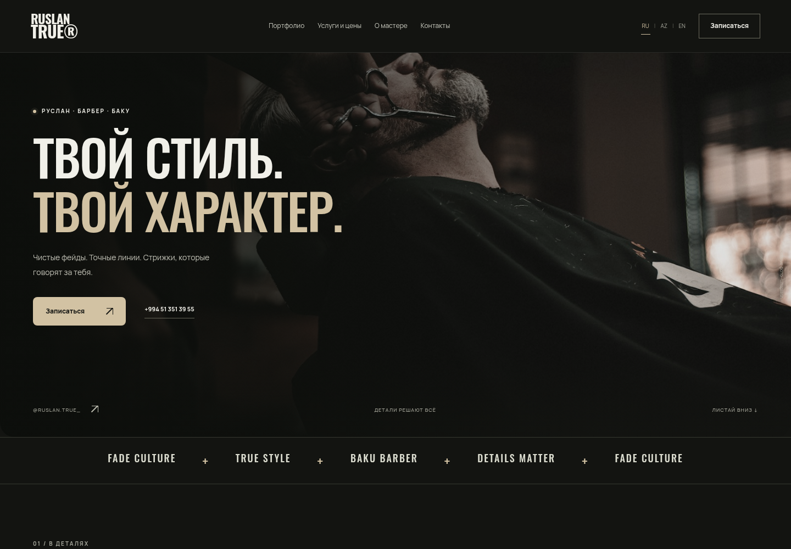

Защита от накладок
Общая база и атомарное бронирование не позволяют подтвердить один слот дважды.
BARBER EXPERIENCE / BAKU
Демонстрация полного функционала,
UI/UX и авто-бронирования
Выбранный час проверяет сервер. После подтверждения запись сохраняется в общей базе.
02 / ДИЗАЙН И UI
Графит, теплый песочный акцент
и зеленый сигнал доступности.

Сохраненные скриншоты интерфейса проекта. Справа — модель нового выбора времени.
Пример состояния интерфейса
Строго 1 час14:00–15:00, 15:00–16:00 и далее
ДоступностьКонтраст, клавиатура и понятные подписи
RU / AZ / ENПредусмотрены в интерфейсе проекта
03 / USER JOURNEY
Актуальные свободные часы.
Подтверждение сразу после записи.
Нажми на дату, чтобы увидеть доступные часы
Каждая кнопка — визит длительностью 1 час. Серые слоты недоступны.
ЗАПИСЬ СОХРАНЕНА
Номер записи сохранен в базе. Для изменения визита свяжись с мастером.
04 / АВТОМАТИЗАЦИЯ
Общая база бронирования.
Telegram-уведомления из очереди.
Здесь появятся данные
твоей подтвержденной записи
Telegram отправляется сервером из очереди. Состояние доставки доступно владельцу в панели.
Сервер сохраняет запись и уведомление в одной транзакции. При временном сбое Telegram доставка повторяется автоматически.
05 / ИТОГИ
Преимущества целевого решения
и граница готовности.
Общая база и атомарное бронирование не позволяют подтвердить один слот дважды.
Система берет на себя подтверждение и уведомления. Мастер управляет графиком.
Дата, зеленый свободный час, контакты и мгновенный ответ в одном сценарии.
Сохраненные макеты показывают адаптивную верстку, RU/AZ/EN, прайс, календарь и часовые слоты. Онлайн-запись сохраняет данные на сервере.
Серверная бронь, единая занятость для всех посетителей, автоматическое подтверждение и реальные Telegram-уведомления.
Полная автоматизация уменьшает ручные операции. Надежность зависит от реализации бэкенда, контроля ошибок и доставки уведомлений.